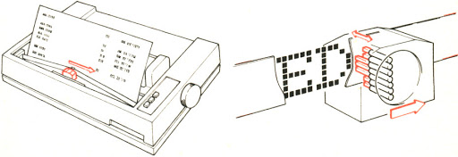
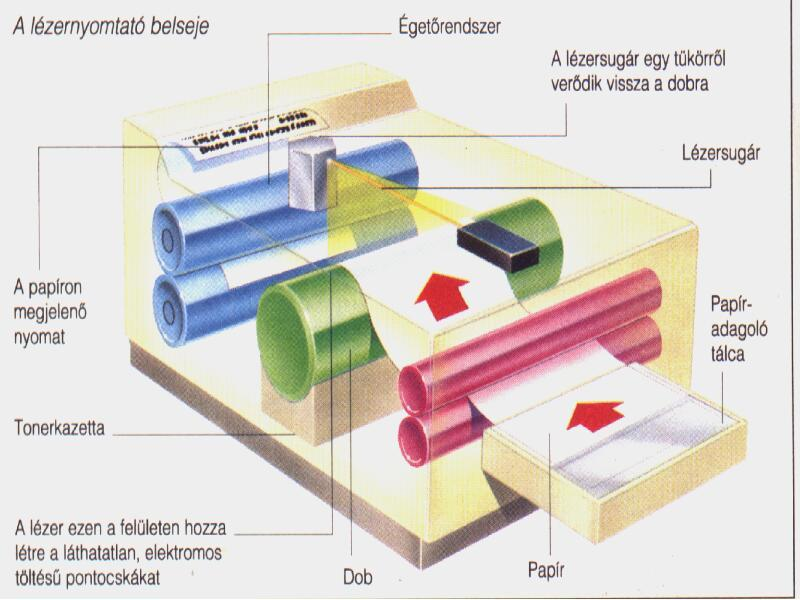
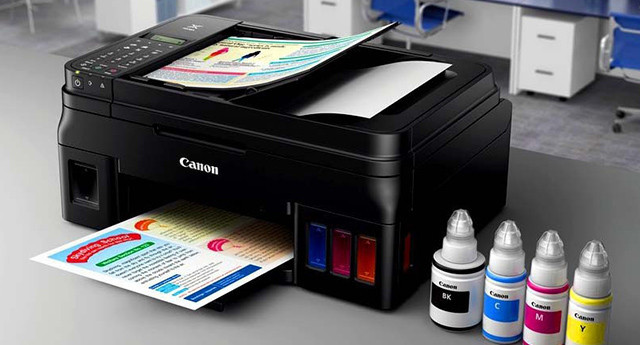
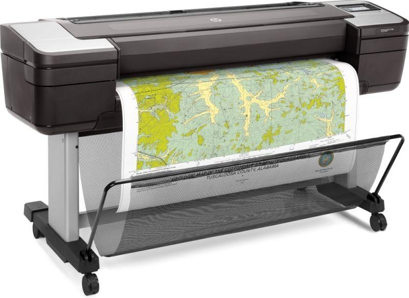

Információ-technológia: nyomtatók
Kidolgozott tétel az Érettségi.com-ról
A számítógéphez kapcsolható nyomtatóknak sok fajtája létezik, de a legelterjedtebbek a mátrix-, a lézer- és a tintasugaras nyomtatók. Több adattal jellemezhetők: felbontás, nyomtatási sebesség, színkezelés, környezetvédelmi szempontok stb. A felbontás mértékegysége a dpi (dots per inch, azaz a hüvelykenkénti festékpontok száma). A sebesség mérésére a lap/perc mérőszámot használják.

Mátrixnyomtatók
A mátrixnyomtatók írófeje több (általában 9 vagy 24), egymás felett elhelyezkedő, apró tűből áll. Működés közben a fej adott sebességgel halad el a festékes szalag előtt. Amikor karakter kirajzolása szükséges, a tűkre kalapácsok ütnek rá és a tűk a festékes szalagon keresztül nyomot hagynak a papíron. Színes kivitelben is gyártják. Hátránya a gyenge nyomatminőség, a viszonylagos lassúság és a nagy zaj. Előnye viszont az, hogy egyedül ez a típus alkalmas egyszerre több példány átütésére (másolatkészítésre).

Lézernyomtatók
A lézerprinterek esetén a nyomtatandó mintát lézersugár rajzolja fel egy szelénhengerre. A rajzolat elektromos töltése utasítja a festékport, hogy mely részleteknek kell fedetteknek lenniük. A festék azután erről a szelénhengerről kerül át a papírra, és ott egy fűtőhenger rögzíti. Nagy előnyük a kiváló nyomtatási minőség (300-1200 dpi) és a nagy sebesség. A működési elvből adódóan oldalorientált elven működik, azaz nem soronkét, hanem egy teljes oldalt nyomtat. Ezért saját memóriával kell rendelkeznie. Színes lézernyomtatók is léteznek, ezeknél a színes kép cián, bíbor, sárga és fekete komponensekből áll össze (CMYK technika). Elméletileg a három alapszín keveréséből feketének kellene lenni, a valóságban azonban piszkosszürke színt kapunk, ezért van szükség a külön fekete alkalmazására. Minthogy a színes lézerprinterek gyakorlatilag négy egyszínű printerből állnak, áruk is ennek megfelelő…

Tintás nyomtatók
A tintasugaras nyomtatók úgy állítják elő a nyomatot, hogy a folyékony festéket apró lyukakon, fúvókákon keresztül juttatják a papírra. Az elv azonos, de a festékcseppek képzésében az egyes gyártók között különbségek vannak. Az egyik módszer a bubble jet technológia, ahol a tintát egy buborék löki ki, amit membrán mozgat. A módszer hátránya, hogy – mivel a gázok összenyomhatók – a buborék nagysága nem szabályozható elég finoman. A másik a piezo-technológia, ami azt a tényt használja ki, hogy a kristályok feszültség hatására megváltoztatják méretüket. Ez a méretváltozás arra éppen elegendő, hogy a tintacseppet elő lehessen állítani. A harmadik módszer a thermal ink jet technológia, amelynél már nem mechanikus, hanem termikus úton juttatják a tintát a papírra. A fúvóka egy fűtőellenállás, s a gyors fűtés hatására a képződő tintacsepp kilövell a fúvókából. Többszínű nyomtatás esetén a tintasugaras nyomtatóknál is a CMYK keverést alkalmazzák. Előnyük a halk működés, a lassan lézerprinterekével vetekedő nyomtatási minőség és az egyre fokozódó nyomtatási sebesség.

Plotterek
A papíron való megjelenítés speciális eszköze a plotter vagy rajzgép. Arra használatos, hogy a számítógépen készült rajzokat kinyomtassuk. Általában speciális filctollakkal, tuskihúzókkal, újabban tintasugaras patronokkal dolgozik. Különböző méretekben készül, a kisebb méretűek lapos felületen rajzolnak, a nagyobbak (egészen A0 méretig) ún. dobplotter kivitelűek.
Források:
Érettségi.com a törzsanyaghoz
Eduline.hu a pontozáshoz
Eduline.hu a százalékszámításhozáshoz
Pontozólap a 2020. évi informatika érettségire
Ide be tudod gépelni a 2020. évi informatika érettsédi eredményeidet. Kattints a gombra az eredményeid megtekintéséért.